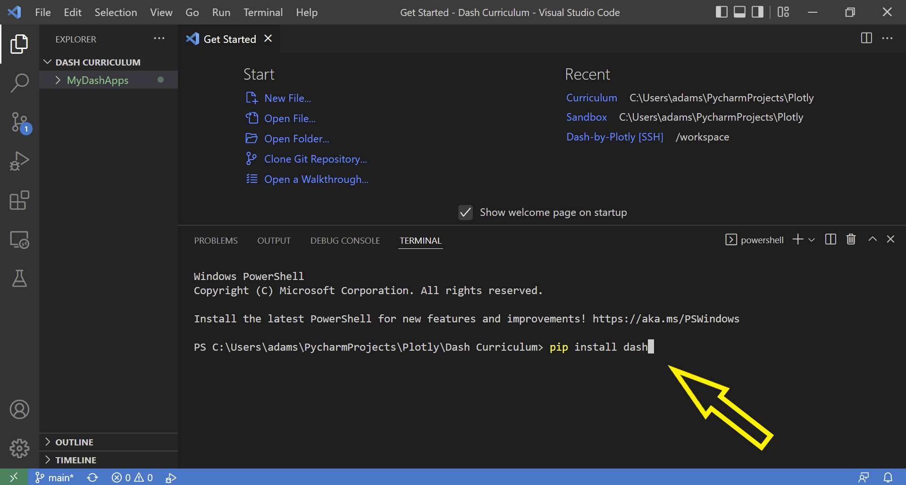

Installation on Windows
Contents
Installation on Windows¶
System requirements for Python and Git are minimal. Therefore, the minimal system requirements for setup will be based on the requirements for Visual Studio Code.
Overview¶
Git
Git is a version control system that is used to track and manage changes to our code over time in a repository
Python
Python is the programming language we will use to build our applications
We will use various Python libraries (such as Dash and Pandas) as the primary building blocks for our application
Github
Github is a cloud-based service that hosts Git repositories. We will use these cloud repositories to deploy our Dash apps.
You will need to create an account on GitHub
Code Editor¶
Visual Studio Code (VS Code)
VS Code is a program that we will use to edit and debug our code
VS Code Extensions help us to code and improve productivity
Note: There are many different IDEs options but using VS Code will make for a smoother learning experience for this course
Installing Git¶
To install Git onto your computer, follow the instructions below:
Installing VS Code¶
Follow the instructions below to install VS Code, set it up, and add Python extensions.
Installing Python¶
Check if you already have Python installed by typing python --version in the VScode terminal. Python version 3.9 or above is highly encouraged. If you see Python installed, skip to section named “Install additional libraries”. If you do not have Python installed, follow the installation instructions below first:
Installing additional libraries¶
We need to install various Python libraries, including Dash, to run our application.
We will use pip to install the libraries, but you may use equivalent commands in other package managers as well including poetry, mamba, conda, and others.
Assuming you are using pip, paste the following commands one at a time into the VScode terminal and ensure installation is complete:
pip install dashpip install dash-bootstrap-componentspip install pandas

Caution
You may be asked to install some dependencies, and you should agree to have those dependencies installed.